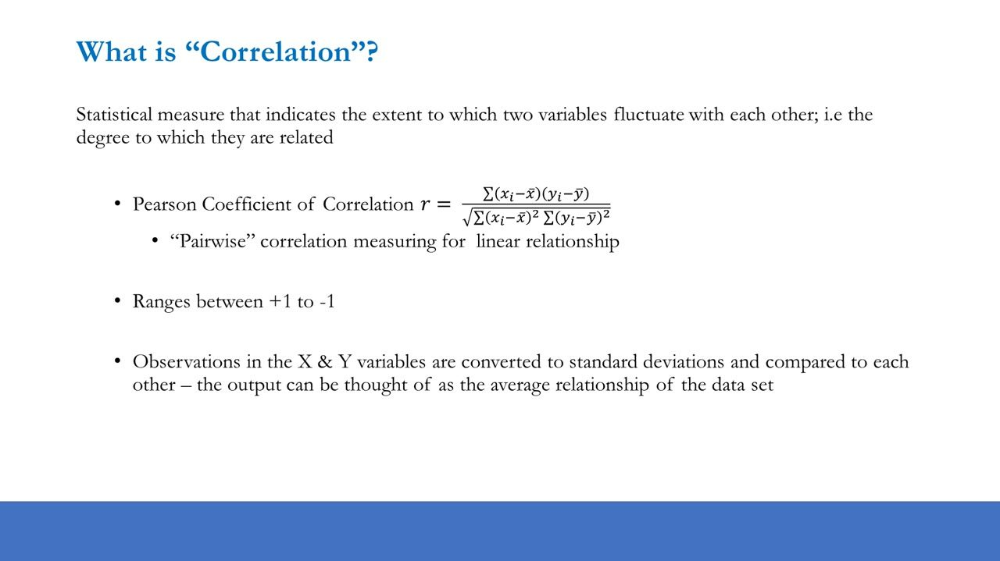
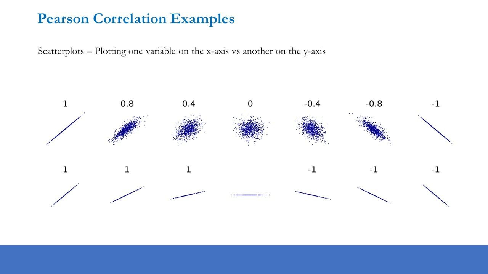
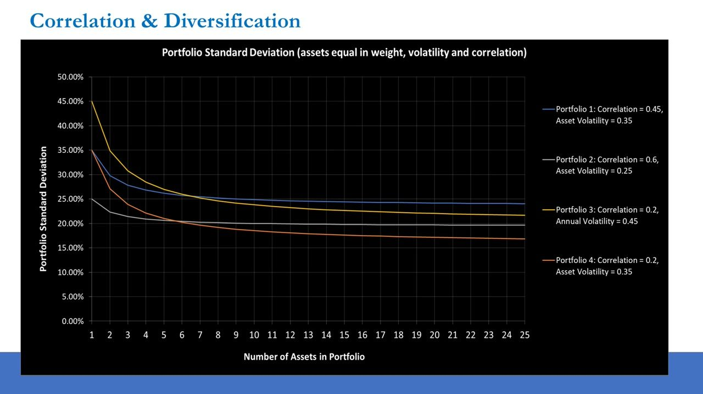
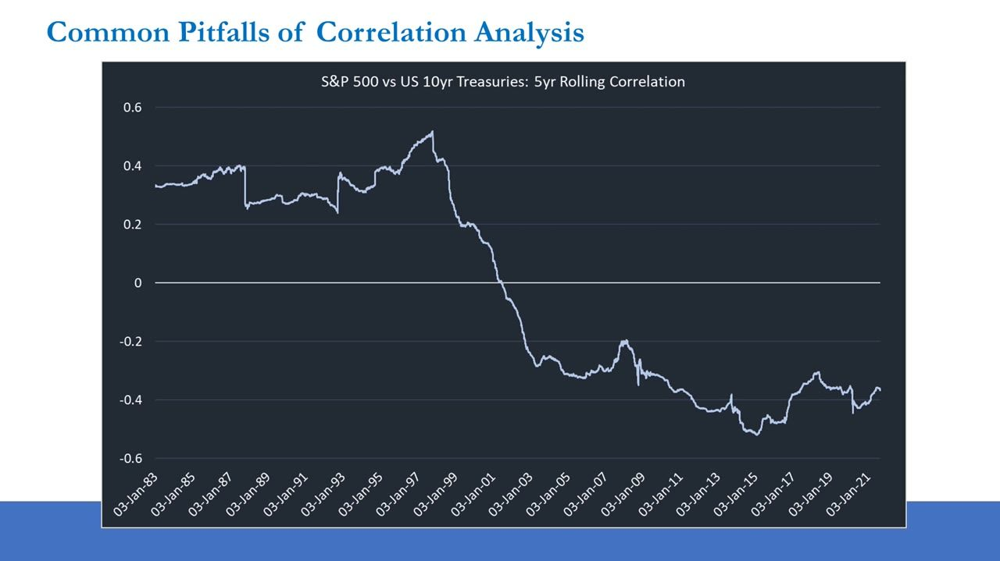
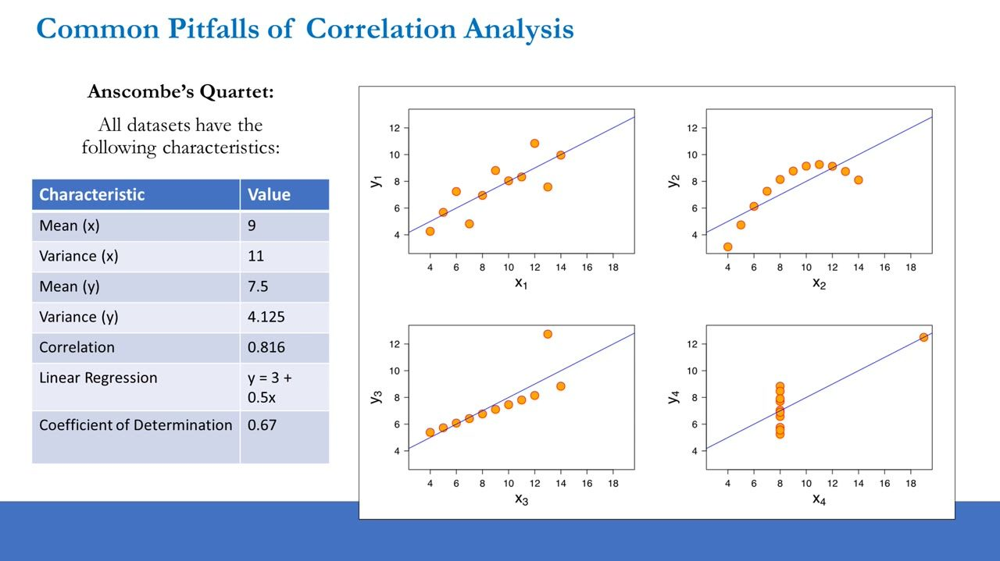
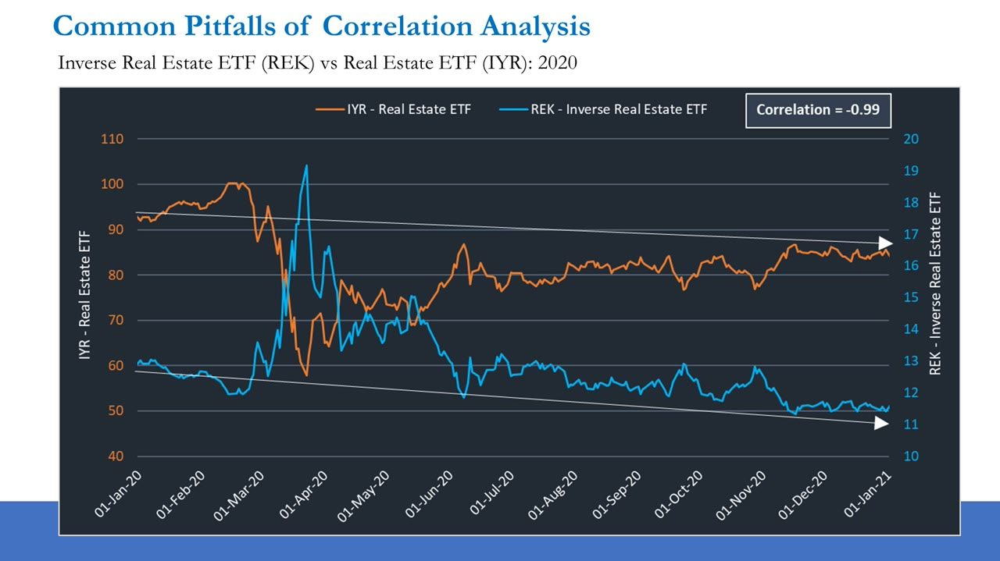
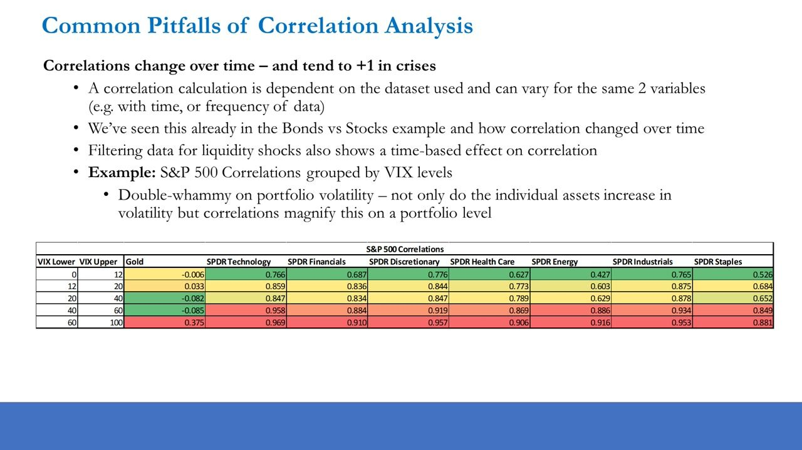
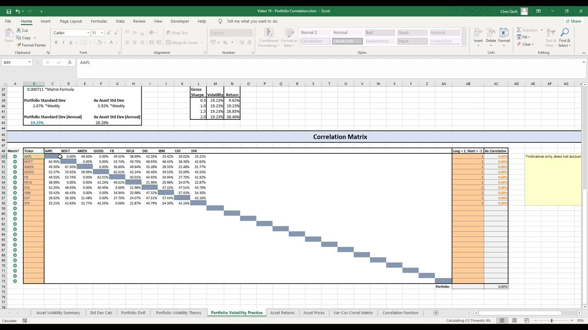

Foundations of Long Short Portfolio Management 3
Portfolio correlation — what the Pearson coefficient really measures, how low correlation and shorting collapse portfolio volatility, and the pitfalls that make a single correlation number dangerous
Correlation (the pairwise, linear Pearson coefficient, ranging +1 to -1) is the single most important driver of portfolio diversification: low or negative average correlation collapses portfolio volatility far below the average single-asset volatility, but correlation is 'just a number' that changes over time and tends to +1 in a crisis, so it always comes after fundamentals.
The gist
- Correlation is the Pearson coefficient of correlation: a PAIRWISE measure of the LINEAR relationship between two variables, ranging +1 to -1 (0 = no linear relationship). Each observation is normalised to its distance from its own mean, so correlation is NOT just 'are both series rising'.
- On a scatterplot, direction (up/down slope) sets the sign and the DISPERSION of the cloud sets the strength — a tight cloud is strong, a scattered cloud is near zero. Any non-flat slope is still +/-1; a flat line has no correlation. Worked example: MLB height vs weight = 0.53.
- Correlation's most important use for a PM is diversification and risk. The 'Correlation & Diversification' curve shows portfolio standard deviation falling as assets are added, and LOWER correlation sets both a faster fall and a lower floor — it dominates individual asset vols in any reasonably sized book.
- In the Excel model, the same three portfolios prove it: long-only mega-cap = 19.23% vol at 42.75% avg correlation; long-only large+mid = 29.36% vol but LOWER 38.52% correlation (mid caps have higher vol yet lower correlation); running it long/short flips average correlation NEGATIVE to -4.69% and collapses portfolio vol to 11.23% on unchanged 44.33% average asset vol.
- Correlation is 'just a number' with real pitfalls: it changes over time (S&P vs 10yr Treasuries flipped from ~+0.5 pre-1998 to persistently negative since), identical statistics hide wildly different data (Anscombe's Quartet: all r=0.816), and trend direction is not the sign (IYR vs REK correlated -0.99 while both drifted the same way).
- The most dangerous regime shift: correlations tend to +1 in a crisis (a 'dash for cash') — a double-whammy where individual vols spike AND correlations magnify, so diversification breaks exactly when needed. Correlation improves probability of success but is never the holy grail; it always comes after fundamentals.
What correlation is — the Pearson coefficient
- Correlation is a statistical measure of the extent to which two variables fluctuate with each other — the degree to which they are related.
- The measure is the Pearson Coefficient of Correlation: r = [ Σ(xi − x̄)(yi − ȳ) ] / √( Σ(xi − x̄)² · Σ(yi − ȳ)² ).
- It is PAIRWISE (computed between exactly two variables at a time) and measures a LINEAR relationship.
- It ranges between +1 and -1 (+1 = perfect positive linear relationship; -1 = perfect negative; 0 = no linear relationship / perfectly uncorrelated).
- Observations in X and Y are converted to standard deviations (each point's distance from its OWN mean) and compared; the output is the average relationship across the data set — not simply 'are both series going up'.
Because each point is measured against its own mean, a correlation of 0 only rules out a LINEAR relationship — the variables can still be related non-linearly. This normalising idea is the same one behind the standard-deviation calculation.

Reading correlation on a scatterplot
- Scatterplots plot one variable on the x-axis against another on the y-axis.
- The correlation grid runs 1, 0.8, 0.4, 0, -0.4, -0.8, -1: at 1 a perfect tight upward line; 0.8 a tight upward cloud; 0.4 a loose upward cloud; 0 a circular random cloud (no relationship); -0.4 loose downward; -0.8 tight downward; -1 a perfect downward line.
- Sign comes from DIRECTION (upward slope = positive, downward = negative); STRENGTH comes from the DISPERSION of the points, not the gradient. The more scattered the cloud, the closer to zero.
- Slope does not set magnitude: lines of any differing (non-flat) slope with a perfect linear relationship all read +1 (upward) or -1 (downward); a perfectly horizontal/flat line has NO correlation.
- Worked real example: Major League Baseball players' HEIGHT (inches) vs WEIGHT (pounds) — an upward-sloping cloud with substantial scatter — has a moderate positive correlation of 0.53.

Why correlation matters — diversification and risk
- Uses of correlation analysis: (1) intermarket analysis (monitoring market/economic relationships), (2) hedging (targeting a more specific returns profile), and (3) diversification and risk — the MOST important use, and the PM's focus.
- The aim is 'efficient diversification': pooling assets with diverse drivers so whole-portfolio risk falls, and doing it at the fastest rate / highest magnitude by choosing LOW-correlation positions rather than adding many medium/high-correlation ones.
- 'Correlation & Diversification' chart: portfolio standard deviation vs number of assets (1 to 25). Each curve declines and flattens (asymptotes) as assets are added.
- Portfolio 1 (correlation 0.45, asset vol 0.35): starts ~35%, flattens ~24%. Portfolio 2 (correlation 0.6, vol 0.25): ~25% to ~20%. Portfolio 3 (correlation 0.2, vol 0.45): ~45% to ~22%. Portfolio 4 (correlation 0.2, vol 0.35): ~35% to ~17% (lowest).
- Every curve starts (1 asset) at that asset's own volatility; adding assets lowers vol as long as correlation < 1. Correlation sets BOTH the slope and the floor: Portfolio 1 and 4 start at the same 35% one-asset vol, but the lower-correlation (0.2) curve falls much faster and lower.
- For 1-2 assets individual vols matter most; in any reasonably sized book the correlations dominate portfolio volatility.
Over-diversification is the return-side trap: marginal risk reduction diminishes with every new position and goes to near-zero around 8-12 positions, while high-conviction ideas are finite — so piling on names for diversification's sake also degrades expected returns, a double hit to risk-adjusted returns. Anton's target is ~8-12 high-conviction, low-correlation positions; fundamentals drive selection, correlation/construction only after.

Pitfall 1 — correlation changes over time
- Correlation is 'just a number' — easily misinterpreted; understanding a relationship takes more than descriptive statistics.
- Correlation is sample-dependent: the same two variables give different values over different time periods or data frequencies.
- Classic example: the 5-year rolling correlation of the S&P 500 vs US 10yr Treasuries was positive and rising to a peak of ~0.5 around 1997-98, fell sharply through zero into negative territory around 1999-2003, and has stayed persistently negative since (roughly -0.2 to -0.5, ending near -0.36 in 2021).
- Correlation is not causation — a strong linear relationship does not mean one variable causes the other, and without the underlying cause there is no assurance it will hold.

Pitfall 2 — Anscombe's Quartet (always plot the data)
- Anscombe's Quartet: four datasets that share IDENTICAL summary statistics yet look completely different when plotted.
- All four share: Mean(x) = 9, Variance(x) = 11, Mean(y) = 7.5, Variance(y) = 4.125, Correlation = 0.816, Linear Regression y = 3 + 0.5x, Coefficient of Determination = 0.67.
- Plot 1: roughly linear scatter. Plot 2: a clearly curved/parabolic (non-linear) relationship. Plot 3: tight linear pattern with one high outlier. Plot 4: all points at x=8 plus one far outlier driving the fit.
- Lesson: identical correlation/regression statistics can arise from wildly different underlying data — always plot and investigate before trusting a number.

Pitfall 3 — trend direction is not the sign of correlation
- Correlations can be strongly positive (or negative) while the data trends in the opposite (or same) direction, because the coefficient relies on each observation's difference from its OWN mean — and the two means may be very different.
- Illustration: if Asset X and Y average -1% and +1% respectively, but whenever X returns above -1% Y returns above +1%, the two can be strongly positively correlated despite different average levels.
- Worked example: Inverse Real Estate ETF (REK) vs Real Estate ETF (IYR) over 2020 had a correlation of -0.99 — near-perfectly negative on a day-to-day basis (IYR crashed to ~57 in the March COVID sell-off while REK spiked to ~19), yet BOTH drifted in the same direction over the full year.
- Consequence: buying both as a 'perfect hedge' would have lost money on both legs — trend direction alone tells you nothing about the sign of correlation.

Pitfall 4 — correlations tend to +1 in a crisis
- Correlations change with the dataset (time, frequency) — and in a liquidity crisis there is a 'dash for cash' where almost everything sells off together and cross-asset correlations tend toward +1, breaking diversification exactly when it is needed most.
- Demonstrated by S&P 500 correlations to sectors grouped by VIX band (VIX as a liquidity-stress proxy):
- VIX 0-12: Technology 0.766, Financials 0.687, Discretionary 0.776, Health Care 0.627, Energy 0.427, Industrials 0.765, Staples 0.526, Gold -0.006.
- VIX 20-40: Technology 0.847, Financials 0.834, Industrials 0.878, Energy 0.629, Gold -0.082.
- VIX 60-100: Technology 0.969, Financials 0.910, Discretionary 0.957, Health Care 0.906, Energy 0.916, Industrials 0.953, Staples 0.881 — nearly everything pinned near +1; Gold the exception, only rising to +0.375.
- The 'double-whammy' on portfolio volatility: in a crisis individual asset vols spike AND correlations magnify toward +1 — both drivers move against you at once, so realised portfolio risk balloons far beyond the model estimate.
This is why a historical correlation must never be treated as a permanent model input: the low or negative average correlation that made a long/short book look diversified can compress toward +1 under stress, temporarily eroding the benefit.

Calculating correlation in Excel — CORREL and rolling windows
- Correlation is computed on RETURNS, not prices — first build each weekly return series (current price / previous price - 1), deleting the first cell where there is no prior period.
- The function is =CORREL(array1, array2), where the arrays are the two return series (order does not matter); both must be the same length and row-aligned (same dates) or it will not work.
- Worked example (WMS = Advanced Drainage Systems, OGS = ONE Gas, weekly since mid-2015): whole-sample correlation ≈ 0.267759, but the latest 1-year (52-week) rolling window reads only ~0.04 — a big drop showing how much correlation moves.
- Rolling windows: copy the CORREL formula down a column with dynamic references. 1-year window = 52 rows; 2-year ≈ 106 rows. Delete trailing cells (and any #DIV/0!) that lack a full window.
- Shorter vs longer windows is a trade-off with no right answer: shorter windows are more timely/sensitive but noisier; longer windows are steadier and use more data (correlations often revert to mean). Anton recommends NOT using less than a year of data. The 2yr rolling series is visibly smoother (~0.36-0.45) than the swingier 1yr.
The portfolio correlation matrix — proving long/short collapses volatility
- In the Portfolio Volatility Practice sheet, a correlation matrix uses the same tickers (same order) as the variance-covariance matrix, with each position flagged +1 (long) or -1 (short). It reports every pairwise correlation, an average correlation per position (column AC), and the portfolio-wide average pairwise correlation over the upper triangle (cell AC74).
- The matrix inherits the time horizon set in the returns sheet, so one horizon drives all variances, covariances and correlations.
- Re-running the three portfolios from the prior lesson — Long-only mega-cap (10 names): portfolio std dev 19.23% (annual) vs average asset std dev 28.28%, portfolio average correlation 42.75%.
- Long-only large + mid-cap: portfolio std dev 29.36% vs average asset std dev 44.33%, but average correlation is LOWER at 38.52% — because mid caps carry higher individual vol yet lower average correlation (less-diversified operations → more idiosyncratic drivers), making them more efficient diversifiers. The Var-Cov summary confirms it: Mega & Large caps average 0.342 correlation vs Mid caps 0.324.
- Same stocks run LONG/SHORT (4 shorts, 6 longs): average asset std dev unchanged at 44.33%, but average portfolio correlation goes NEGATIVE to -4.69% (shorts flip the sign of their pairwise correlations), collapsing portfolio std dev from 29.36% to 11.23%. Portfolio variance drops from 0.001658 to 0.000242.
- Scenario analysis at 11.23% vol: a Sharpe of 1.0 = 11.23% return, 2.0 = 22.45%. Practical use: the lowest-average-correlation names are the most effective diversifiers, and candidates (e.g. TPX or OLED) are modelled for their pairwise/average correlation before adding — but correlation is always secondary to fundamentals.
This is the direct correlation-side proof that long/short construction dramatically reduces portfolio volatility: individual pairwise correlations shift toward zero and some turn negative because of the shorts, driving the whole-portfolio average correlation below zero while single-asset volatility is unchanged.

Glossary
- Pearson Coefficient of CorrelationThe standard measure of correlation: r = [ Σ(xi − x̄)(yi − ȳ) ] / √( Σ(xi − x̄)² · Σ(yi − ȳ)² ). A pairwise measure of the LINEAR relationship between two variables, ranging +1 to -1 (0 = no linear relationship).
- Correlation range+1 = perfect positive linear relationship; -1 = perfect negative; 0 = perfectly uncorrelated. A zero rules out only a LINEAR relationship — variables can still be related non-linearly.
- Efficient diversificationLowering whole-portfolio risk by pooling assets with diverse drivers, at the fastest rate and highest magnitude, by choosing LOW-correlation positions rather than many medium/high-correlation ones.
- Over-diversificationThe return-side pitfall: marginal risk reduction goes to near-zero around 8-12 positions, while high-conviction ideas are finite — so adding names for diversification's sake degrades expected returns. Target ~8-12 positions.
- Anscombe's QuartetFour datasets sharing identical statistics (mean x=9, var x=11, mean y=7.5, var y=4.125, correlation=0.816, regression y=3+0.5x, R²=0.67) yet looking completely different when plotted — proof you must always plot the data.
- Crisis correlation regimeIn a liquidity crisis ('dash for cash') cross-asset correlations tend toward +1 and diversification breaks down; a double-whammy where individual vols spike AND correlations magnify simultaneously. Gold is a partial exception.
- CORRELThe Excel function =CORREL(array1, array2) that computes the Pearson correlation of two equal-length, row-aligned return series. Rolling windows: 52 rows = 1 year, ~106 rows = 2 years; never use less than a year of data.
- Portfolio average correlationThe average of all pairwise correlations across the portfolio's positions (cell AC74, over the upper triangle). Flipping a position to short (-1) flips the sign of its pairwise correlations, which is how a long/short book pushes the average negative (e.g. -4.69%).
- Efficient mid-cap diversifierA mid-cap name that carries higher individual volatility (→ higher expected return) yet lower average correlation to other stocks (more idiosyncratic drivers), making it a more effective diversifier than a mega-cap.